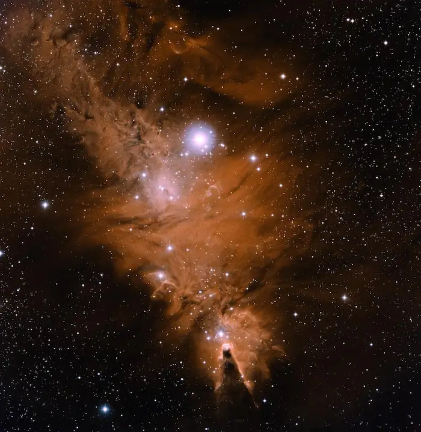
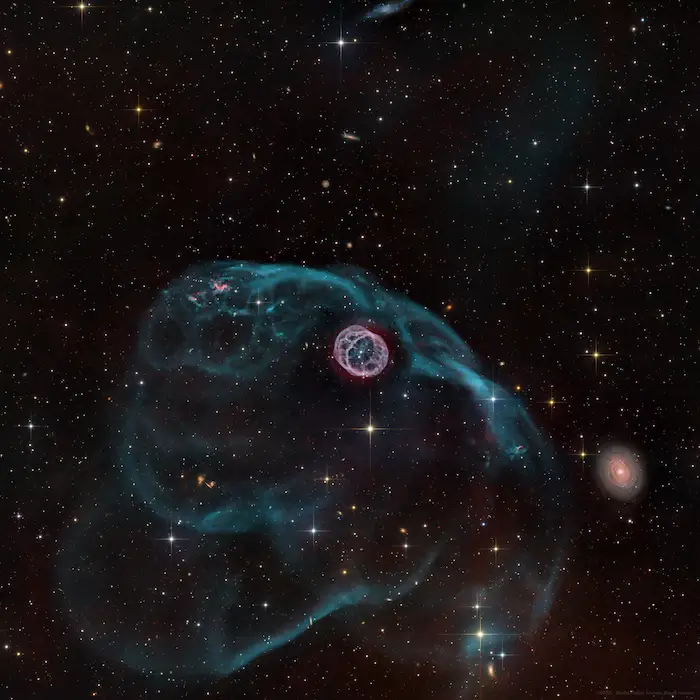

Picture of the day
Dive into the mysteries of deep space with a daily window into the cosmos, showcasing stunning nebulas, distant galaxies, and celestial phenomena captured by NASA's advanced telescopes and brave explorers.

Gallery
Our gallery brings together a stunning collection of deep-space photography, planetary flybys. Wander through breathtaking views of distant galaxies, cosmic dust clouds, and celestial wonders captured by NASA's most powerful telescopes.
